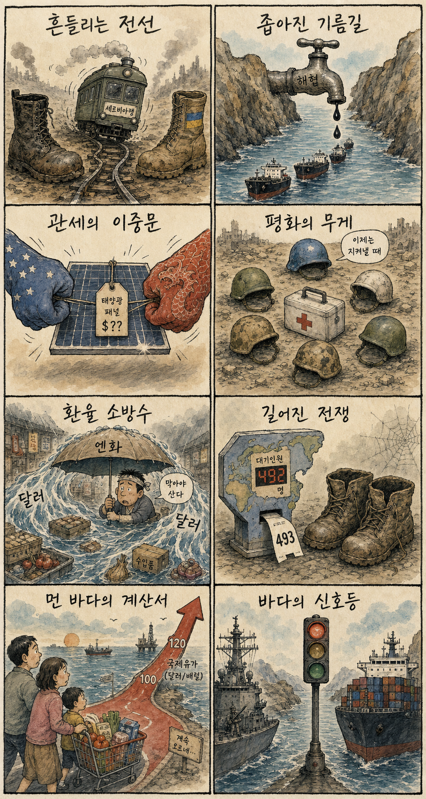
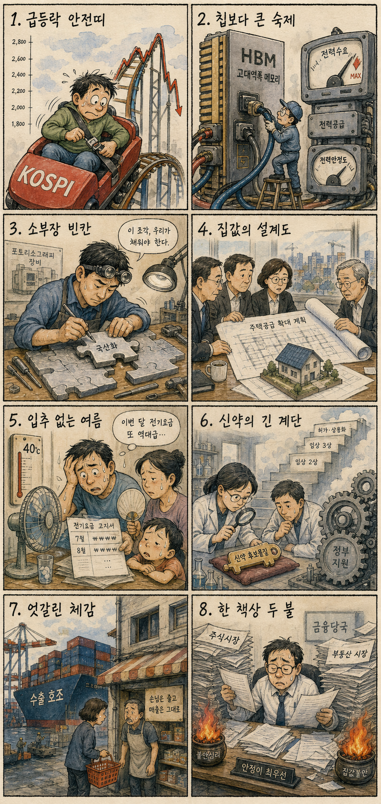

01
마이크로소프트 +2.54% — 대형 기술주 가운데 상대 강세를 보이며 AI·클라우드 투자 기대가 방어력을 제공했습니다
내용요약 499.86달러로 마감했습니다. 대형 기술주 가운데 상대 강세를 보이며 AI·클라우드 투자 기대가 방어력을 제공했습니다.
예상여파 국내 소프트웨어·클라우드 심리를 지지하지만 지수 약세 속 선별 접근이 필요합니다.
MORNING_BRIEFING_20260807
작성 시각: 2026-08-07 06:37 KST · 직전 미국 정규장과 2026-08-07 KST 당일 공개 기사 기준
직전 미국 정규장인 8월 6일에는 다우 -0.85%, S&P 500 -0.18%, 나스닥 -0.06%로 동반 하락했습니다. 호르무즈 통항 제한 우려로 국제유가가 반등하고 금리 부담이 겹치며 다우의 5거래일 랠리가 멈췄습니다. 한국은 전일 KOSPI -4.58%, SK하이닉스 -10.37%, 삼성전자 -6.30%로 이미 큰 폭 조정을 받은 만큼, 오늘은 기술적 반등보다 원·달러와 외국인 현·선물 수급의 안정 여부가 우선입니다.
| 지수 | 종가 | 등락률 | 한국 증시 영향 |
|---|---|---|---|
| 다우존스 | 53,885.10 | -0.85% | 유가·금리 부담으로 경기민감 심리 약화 |
| S&P 500 | 7,709.96 | -0.18% | 대형주 전반의 위험선호 둔화 |
| 나스닥 종합 | 26,348.35 | -0.06% | 기술주는 상대 방어했으나 방향성 제한 |
유가와 금리 부담으로 다우가 0.85% 내렸습니다.
KOSPI -4.58%, SK하이닉스 -10.37%였습니다.
호르무즈 불확실성으로 국제유가가 반등했습니다.
검증 문턱과 표본 부족으로 공식 추천은 없습니다.
8월 6일 보고서는 수급·컨센서스·30건 이상 유사 조건 보정 표본과 손익비 문턱을 동시에 검증한 종목이 없어 공식 추천을 내지 않았습니다. 따라서 8월 6일 실제 시가를 사후 진입 기준으로 계산할 종목이 없으며 게시 당시 판단을 바꾸지 않습니다.
| 지수 | 종가 | 등락률 | 해석 |
|---|---|---|---|
| 다우존스 | 53,885.10 | -0.85% | 5거래일 상승 뒤 조정 |
| S&P 500 | 7,709.96 | -0.18% | 유가·금리 부담 |
| 나스닥 종합 | 26,348.35 | -0.06% | 기술주 상대 방어 |
| KOSPI | 6,296.38 | -4.58% | 대형 반도체 중심 급락 |
| KOSDAQ | 801.67 | +0.26% | 중소형 성장주 상대 강세 |
국제유가 상승 연계 정유·에너지, AI 추론칩·HBM4, 소부장 국산화, 방어적 통신·필수소비재
급락 추세가 남은 대형 반도체, 유가 민감 항공·화학, 금리 민감 고밸류 성장주, 공급정책 경계 부동산 관련주
내용요약 499.86달러로 마감했습니다. 대형 기술주 가운데 상대 강세를 보이며 AI·클라우드 투자 기대가 방어력을 제공했습니다.
예상여파 국내 소프트웨어·클라우드 심리를 지지하지만 지수 약세 속 선별 접근이 필요합니다.
내용요약 489.28달러로 마감했습니다. AI 전용 반도체 스타트업 인수 보도로 엔비디아 추격 기대가 높아졌습니다.
예상여파 국내 HBM·패키징 연결 기대를 높이지만 뉴스 직후 추격은 피해야 합니다.
내용요약 29.38달러로 마감했습니다. AI 서버주의 차익매물과 업종 변동성이 이어졌습니다.
예상여파 국내 서버·냉각 관련주도 수요 기대와 단기 과열을 분리해야 합니다.
내용요약 357.75달러로 마감했습니다. AI 핵심 인재 이탈과 조직 개편 우려가 이어지며 약세를 보였습니다.
예상여파 AI 기업가치에서 인재 유지와 조직 안정성이 더 중요한 변수로 부각됩니다.
내용요약 155.92달러로 마감했습니다. 최근 급등 뒤 밸류에이션 부담으로 숨고르기가 이어졌습니다.
예상여파 기업용 AI 관심은 남지만 급등 직후 가격 위험을 보여줍니다.
미국 지수의 추가 하락 폭은 제한적이지만 호르무즈 통항 제한 우려와 유가 반등은 수입물가와 운송비에 부담입니다. 전일 KOSPI -4.58%, SK하이닉스 -10.37%, 삼성전자 -6.30%와 달리 KOSDAQ은 +0.26%로 마쳐 시장 내부 차별화가 컸습니다. 시초가 반등만으로 바닥을 단정하지 말고 외국인 현·선물 동시 순매수, 대형 반도체 저점 이탈 여부, 원·달러와 유가 안정까지 확인해야 합니다.
오늘은 추천 없음 — 현금 관망
전일 KOSPI 급락과 대형 반도체의 두 자릿수 변동성 속에서 전일까지의 외국인·기관 수급, 컨센서스 변화, 30건 이상 유사 조건 확률 보정, 예상 손익비 1.5 이상을 동시에 검증한 후보가 없습니다. 임의의 점수와 확률은 제시하지 않습니다.
관심 연결종목 HBM4·소부장, 정유·에너지, 데이터센터 전력 관련주는 관찰 대상일 뿐 매수 추천이 아닙니다. 급락 반등과 장전 갭 발생 시 추격매수 금지입니다.
호르무즈 불확실성이 환율·수입물가에 번지는지 봅니다.
전일 급락 뒤 저점 이탈과 외국인 수급을 확인합니다.
공급 규모·일정과 금융시장 반응을 점검합니다.
40도 안팎 폭염 속 전력 예비율과 냉방비를 봅니다.
핵심 요약: AMD의 AI 추론칩 인수와 HBM4 수요가 반도체 경쟁을 넓히는 가운데 한국은 글로벌 AI 기업 유치, 소부장 자립, 데이터센터용 차세대 원전이라는 세 축을 동시에 맞고 있습니다.
내용요약 AMD가 AI 추론 전용 반도체 스타트업 탈라스를 인수해 가속기 포트폴리오를 넓힌다는 보도입니다.
예상여파 엔비디아 중심의 AI칩 시장에 추론 특화 경쟁이 더해져 칩 설계·HBM·패키징 생태계의 선택지가 늘어날 수 있습니다.
내용요약 AI 가속기 고객이 높은 가격에도 HBM4 구매를 확대하면서 삼성전자와 SK하이닉스의 제품 가치가 높아진다는 분석입니다.
예상여파 고대역폭 메모리 수요는 장기 우호적이지만 국내 대형주의 급격한 가격 변동과 생산 수율을 함께 봐야 합니다.
내용요약 글로벌 AI 기업들이 한국을 아시아태평양 사업과 인프라 확장의 거점으로 검토한다는 보도입니다.
예상여파 클라우드·데이터센터·전력·통신 수요를 자극할 수 있으나 실제 투자 확정 여부가 관련주의 지속성을 가릅니다.
내용요약 차세대 원자로 개발사가 첫 임계 달성에 성공해 AI 데이터센터용 전력 상용화에 한 걸음 다가섰다는 보도입니다.
예상여파 AI 전력 병목이 원전·전력망 투자로 이어질 가능성을 높이지만 인허가와 건설 기간은 여전히 핵심 변수입니다.
내용요약 중국 반도체 장비의 기술 진전 속에서 한국도 노광을 포함한 핵심 소재·부품·장비의 자립을 서둘러야 한다는 분석입니다.
예상여파 장비 국산화 연구개발과 공급망 다변화가 확대될 수 있지만 상용 인증과 고객 채택까지 장기 검증이 필요합니다.
핵심 요약: 세르비아를 둘러싼 우크라이나 외교, 가자 국제군 참여, 미·중 태양광 관세가 국제질서를 흔드는 가운데 엔화 개입과 호르무즈 유가가 금융시장 변동성을 키우고 있습니다.
내용요약 우크라이나 대통령이 전쟁 발발 후 처음으로 러시아의 전통 우방인 세르비아를 방문한다는 보도입니다.
예상여파 발칸 외교 지형의 변화는 우크라이나 지원 연대와 러시아의 지역 영향력 경쟁을 자극할 수 있습니다.
내용요약 미국이 중국산 태양광 제품에 가격 하한과 추가 관세를 함께 적용한다는 보도입니다.
예상여파 태양광 공급망 재편과 미국 내 가격 상승 압력이 커지며 비중국 공급자의 기회와 비용 부담이 동시에 생길 수 있습니다.
내용요약 우간다 의회가 가자지구 국제안정화군 참여를 위한 파병을 승인했다는 보도입니다.
예상여파 아프리카 국가의 참여가 평화유지 구상을 넓히지만 현지 안전과 임무 범위를 둘러싼 논쟁도 커질 수 있습니다.
내용요약 미국의 엔화 부양 개입이 달러 유동성을 공급해 연준의 긴축 방향과 충돌할 수 있다는 분석입니다.
예상여파 달러·엔 변동과 유동성 변화가 아시아 통화, 엔 캐리 자금, 한국 외국인 수급을 흔들 수 있습니다.
내용요약 호르무즈 해협 통항 제한 우려와 협상 불확실성으로 브렌트유가 큰 폭 반등했다는 보도입니다.
예상여파 유가 상승이 길어지면 운송·원가·물가 부담이 커지고 한국 증시의 에너지와 항공·화학 업종이 엇갈릴 수 있습니다.

핵심 요약: 국내 증시의 급격한 조정 속에서 정부는 소부장과 신약 연구를 지원하고 주택 공급 확대를 논의합니다. 입추에도 이어지는 극한 폭염은 전력과 가계 부담을 높입니다.
내용요약 정부가 핵심 소재·부품·장비 협력모델 5건을 승인하고 5년간 연구개발 자금 910억원을 지원한다는 보도입니다.
예상여파 공급망 자립 투자가 확대되지만 개별 기업 수혜는 과제 선정과 사업화 성과를 확인해야 합니다.
내용요약 인공지능을 활용한 신약 탐색과 K-제약바이오 연구가 정부 과제를 통해 속도를 낸다는 보도입니다.
예상여파 개발 기간 단축 기대가 커질 수 있으나 임상 성공과 허가까지의 높은 불확실성은 그대로 남습니다.
내용요약 최근 코스피 반등을 장기 상승 전환보다 변동성이 큰 조정 국면으로 봐야 한다는 시장 분석입니다.
예상여파 전일 KOSPI 급락과 대형 반도체 약세 뒤에는 지수 추격보다 현금 비중과 손실 관리가 중요해질 수 있습니다.
내용요약 정부가 부동산 정책 2차 회의를 열어 주택 공급 확대 방안을 논의할 예정이라는 보도입니다.
예상여파 구체적인 공급 규모와 일정이 건설·금융시장 기대와 실수요자의 매수 심리에 영향을 줄 수 있습니다.
내용요약 입추에도 수도권을 중심으로 40도에 육박하는 폭염과 열대야가 이어질 전망이라는 보도입니다.
예상여파 전력 피크, 냉방비, 야외 노동 안전과 농축산물 가격 부담이 동시에 커질 수 있습니다.
